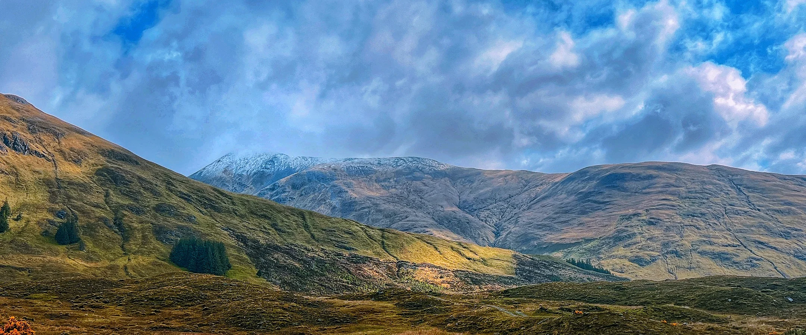
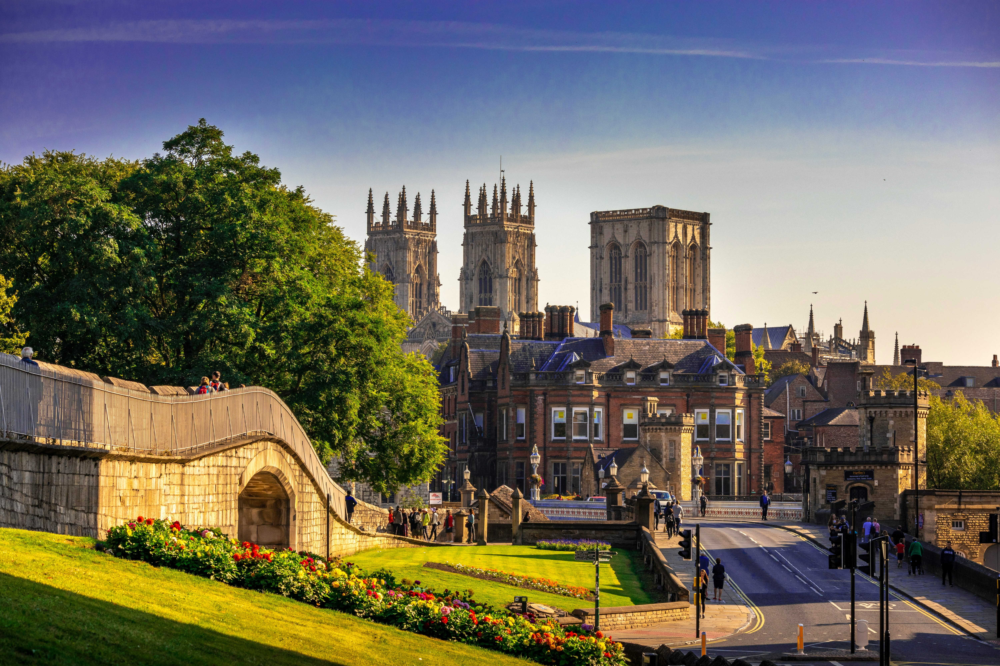
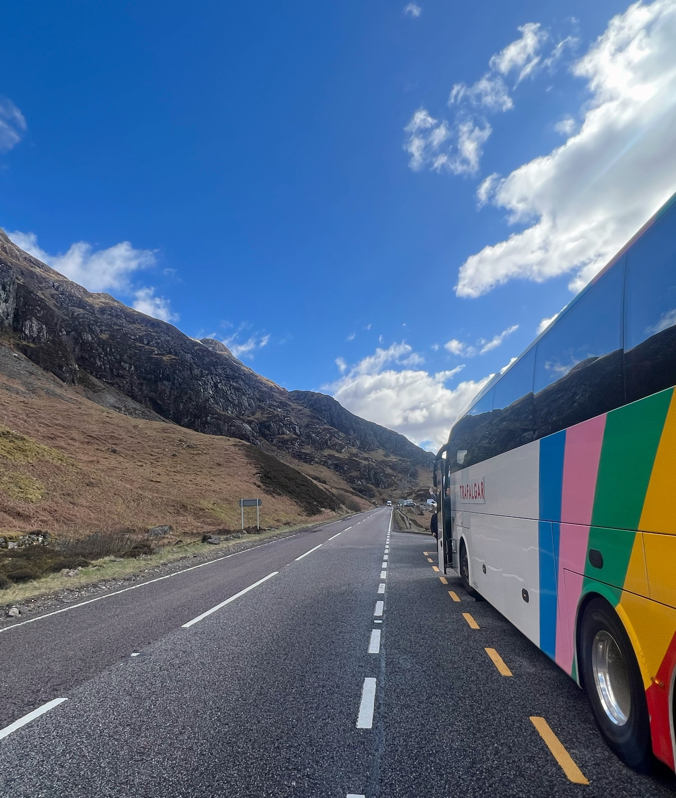
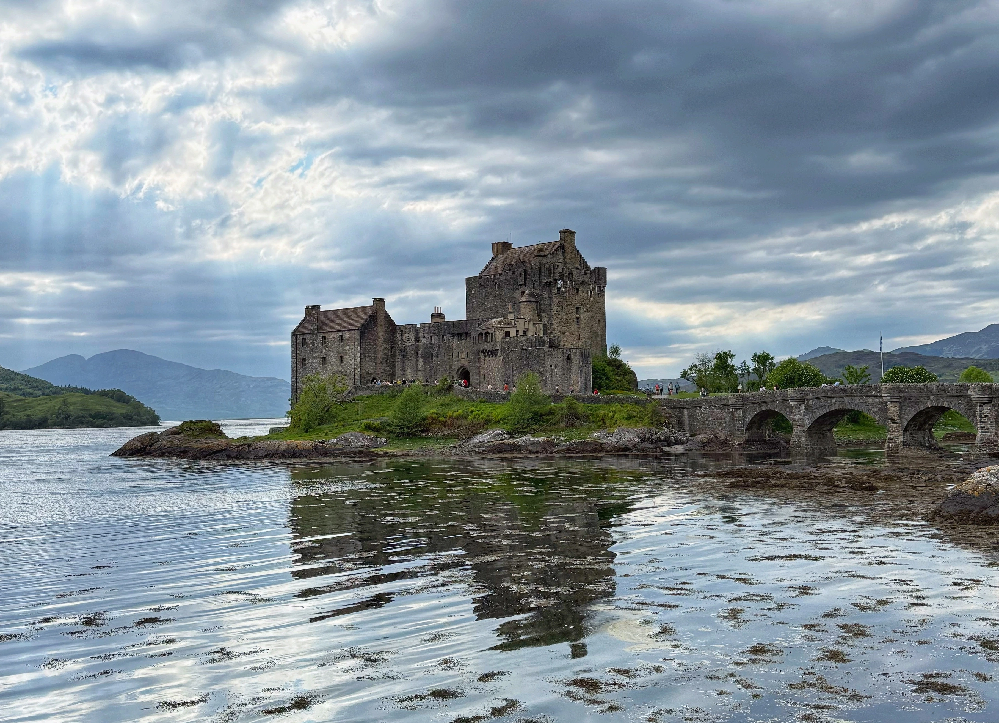

Well-paced tours, clearly led.
Clear timing, steady communication and practical guidance from day one. You will see a lot in a short space of time, with the logistics taken care of so you can focus on each stop.

Experienced support, so your journey feels smoother from day one.
My background spans more than a decade across tourism and hospitality, with most of that time focused on leading guided journeys across Europe.
My approach is straightforward: clear communication, calm organisation and keeping you informed at every step.
I work primarily across the UK, Ireland and continental Europe, supporting tours that balance practical coordination with local insight and a well-paced travel experience.
This site gives you a clearer starting point before departure: the useful details in one place, with a little more personality than a standard travel email.
Most people do not need constant information during travel — they usually just need the right information at the right moment.



Tour-specific Welcome Pages.
If you are travelling on one of the departures below, you can open the Welcome & Tour Tips before you leave, or use the official Trafalgar page for the full itinerary and trip overview.
Best of Ireland & Scotland
A journey through Celtic Ireland and Scotland, starting in Dublin and giving a real taste of Irish cities and countryside before continuing through Northern Ireland and finishing in Scotland, with its Highlands, islands and great cities.
Welcome & Tour Tips → Official Trafalgar site →
Britain & Ireland Highlights
A real taste of the British Isles at their most iconic, taking in cities such as London, York, Glasgow, Edinburgh, Belfast, Dublin, Waterford and Cardiff, along with standout sights like Edinburgh Castle and Stonehenge.
Welcome & Tour Tips → Official Trafalgar site →Grand European
A classic multi-country journey from London through Belgium, Germany, Austria, Italy, Switzerland and France, combining iconic capitals with scenic regions and big-ticket European highlights.
Welcome & Tour Tips → Official Trafalgar site →
The best tours feel well paced, clearly led and easy to settle into.
Good stops rarely need much introduction. A little context, the right pace, and most places do the rest.
Whether it is a scenic drive through Glencoe, a busy city arrival or a practical departure morning, the aim is always the same: help people feel relaxed, informed and able to enjoy where they are.
Some parts of travel make more sense afterwards.
Books, films, music and notes from the road can help people return to places in a quieter way after the tour has finished.
Books, films and music from the road.
A simple collection of things connected to the places guests travel through.
Open Reading & Watching → From The RoadNotes and reflections from tour.
Observations, landscapes and quieter thoughts from time spent travelling with guests.
Read From The Road →Regions I return to often.
I work across routes where the practical rhythm of touring matters as much as the destination itself: long coach days, city arrivals, border crossings, weather changes and places that reward a little context.
UK & Ireland
Familiar routes with deep stories beneath the surface.
Europe
Classic cities and scenic regions, paced with care.
Eastern Europe
Distinct histories, layered cities and a strong sense of place.
Glimpses from journeys that stay with people.
A few images from the road: not a full gallery, just the kind of places and moments that tend to linger after the tour moves on.



Stay connected.
A few simple ways to stay in touch after the road — occasional notes, future tour updates and the usual social channels.
Mailing List
Stay in touch after the road.
Occasional updates, future tour notes and a few useful messages from the road, sent quietly and only when there is something worth sharing.
Instagram
Find me on Instagram.
Facebook
Connect with me on Facebook.
WhatsApp
Message me directly on WhatsApp.